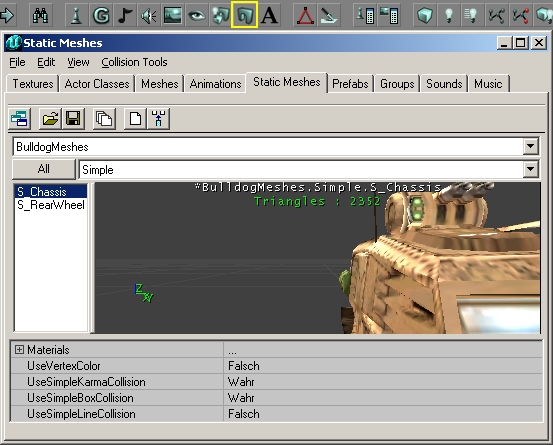

Static Mesh Browser
The Static Mesh Browser is one of several Resource Browsers in the UnrealEd Interface. By default it is docked in the Master Browser.
Uses of the browser:
- displays currently loaded static meshes,
- allows further packages to be opened: see Static Mesh Package for a reference listing with descriptions
- allows properties of the static mesh resources to be edited, such as collision, materials. But remember Do not alter default packages.

Static Mesh Browser |
Opening
The Static Mesh Browser is accessed either of two ways:
- Do UnrealEd Main Menu → View → Static Mesh Browser
- Press the Static Mesh Browser button in the middle of the toolbar at the top of the Editor window. It looks like an arch, to the left of the "A".
Browser Toolbar Buttons
The Static Mesh Browser has the following buttons (from left to right) in its toolbar:
- Dock / undock from browser window
- Open Package
- Save Package
- Load Entire Package
- Create Static Mesh from Selection
- Insert Static Mesh into Level
Links

Navigation
<< Main UnrealEd Interface
< Previous Prefab Browser | Animation Browser Next >